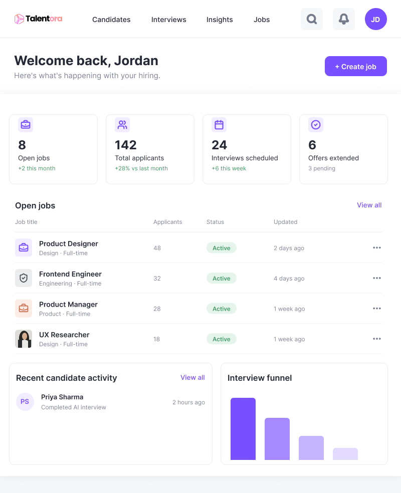
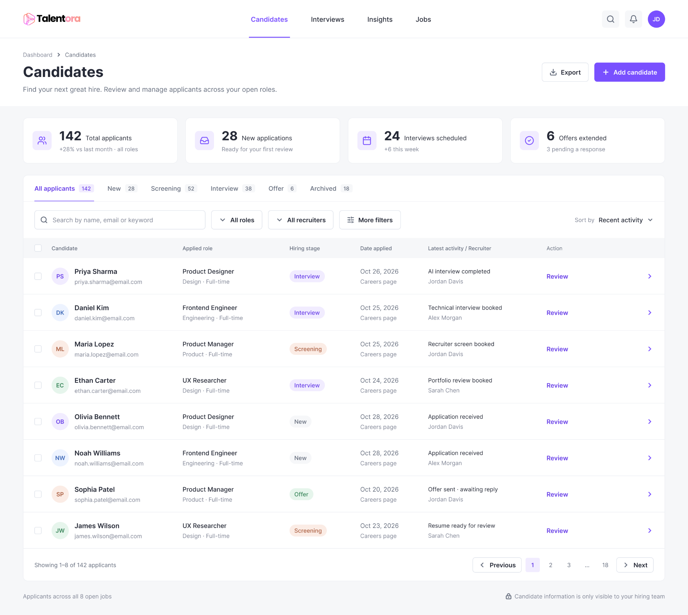
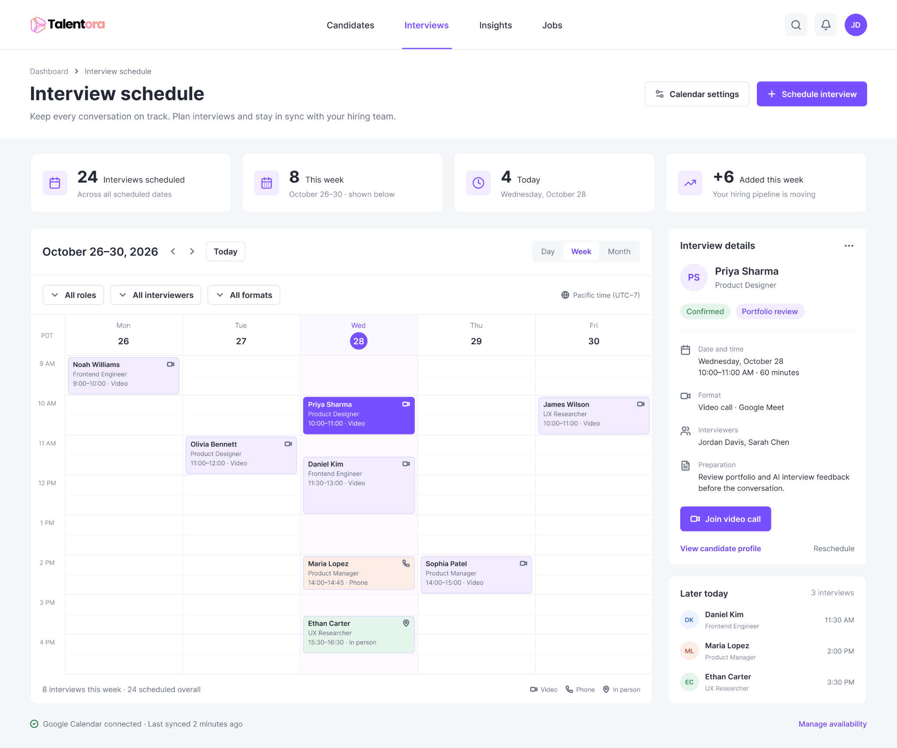

Talentora Interviewing
Modernizing a Hiring Pipeline with AI
Hiring used to be slow, expensive, and time-consuming. Traditional recruiting workflows were outdated and difficult to navigate, costing organizations millions in hiring expenses while slowing down the search for talent. I redesigned the experience end to end, introducing an AI-powered recruiting agent that streamlines candidate screening, automates interviews, and makes finding and hiring the right people faster and more intuitive with Talentora.
- Role
- Lead Product Designer
- Years
- 2025–2026
- Scope
- UX research, UI/UX design, branding
Challenge
With no dedicated researchers, I had to learn and understand complex hiring workflows before redesigning anything. The challenge was to speed up candidate screening and interviews, saving time and money on hiring without sacrificing the human judgment essential to finding the right talent.
Impact
Collaboration
As lead product designer, I collaborated directly with business stakeholders, PMs, and engineers from vision through execution, keeping design aligned with business goals and technical feasibility at every step. I also owned the research myself, ensuring the redesign was grounded in real user workflows rather than assumptions.
What the research brought into focus
I interviewed small-business employers and active job seekers and explored competing products. The existing research synthesis identifies three concerns: repetitive screening work, limited context beyond résumés, and uncertainty about impersonal or opaque AI evaluation.
These themes framed the design questions. They do not establish that an AI interview is more accurate or fair than another screening method.
RECRUITER PERSONA
Jordan Miller
HR Manager · Small tech startup
Personality
Efficient · Empathetic · Tech-savvy
Analytical · Solution-oriented
Expectations & goals
- Screen candidates quickly and fairly
- Reduce repetitive interview tasks
- Understand soft skills and cultural fit
- Maintain a positive candidate experience
- Lower hiring costs and time-to-fill
- Trust insights without sacrificing transparency
Narrative
Jordan manages hiring at a growing tech startup and wears multiple hats. They want to connect talented people with the right roles, but finds screening applicants time-consuming. They look for tools that save time, improve candidate fit, and still feel human and fair.
Explore the supporting research artifacts


Three decisions that shaped the experience
01 / Separate recruiter and candidate journeys
The two roles have different tasks. The proposed flows separate candidate preparation from recruiter setup and applicant review, so each journey can focus on the information needed for that role.
02 / Put preparation before the interview
Problem: Candidates may not know what an AI interview will involve.
Decision: I added a preparation screen with a microphone check and practice question.
Why: The preparation concept explains the interview format, estimated length, and use of video and audio before the candidate starts. A microphone check and an unrecorded practice question give candidates a chance to get comfortable with the experience.
What I’d test: Whether the extra step improves readiness or causes people to leave.
The two illustrative screens below show the connected experiences: a recruiter sets up interview questions, while a candidate gets ready to respond.


03 / Connect the brand to onboarding
I developed logo variations, spacing guidelines, and a color palette, then applied the identity to onboarding screens. This connects the marketing promise with the product experience. A consistent identity can support recognition, but visual polish alone does not establish trust in an AI evaluation.


Exploring the product experience
These illustrative concepts show how recruiters might review an interview, manage hiring activity, configure interviews, and help candidates prepare for an AI interview.

From hiring overview to the next conversation
These interface concepts explore three connected recruiter tasks: understanding hiring activity, finding the right candidate record, and coordinating interviews.
01 / See what needs attention
A daily overview brings open roles, applicant counts, and recent candidate activity together. The intended next step is to move from a summary into a role or candidate record.

02 / Find and review candidates
Stage tabs, search, and role filters organize the applicant pipeline. Each row keeps the applied role, hiring stage, and latest activity visible alongside a review action.

03 / Coordinate the next conversation
A weekly calendar pairs interview times with a selected candidate’s details, preparation notes, and meeting actions. This concept explores how scheduling could connect back to candidate review.

Follow the proposed workflows
These diagrams document the intended experience. They are design artifacts, not a recording of a verified live product.


View prioritization, ideation, and brand development


What I would validate next
The central tension is between reducing recruiter effort and preserving meaningful candidate context. Looking back at the proposed flow, emotion and sentiment analysis need particular scrutiny: a confident-looking summary should not be treated as evidence of job suitability.
A next iteration should make the source and limitations of AI-generated information visible and preserve human review. These are recommendations for further work, not claims that these safeguards were implemented or tested.
- Usability: Can recruiters configure an interview without help? Track completion, errors, and time on task.
- Candidate readiness: Do practice and permissions steps clarify what will happen? Observe comprehension and setup abandonment.
- Understanding: Can reviewers distinguish candidate evidence from AI interpretation? Test this before drawing conclusions about trust.
This case study presents the design work. It does not claim improved hiring quality, validated fairness, or a measured increase in user trust.